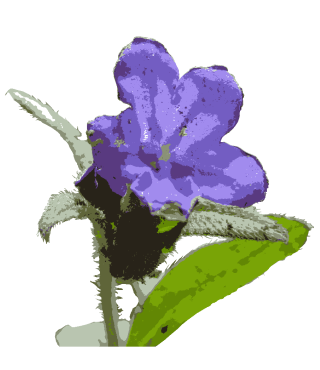
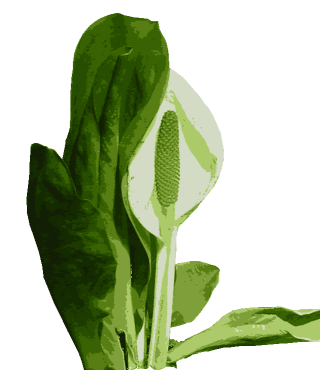
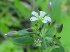

今日一日を考えても、この手はさまざまな動きや物に触れ、まったく何にも執着せず、無限の働きをする。
▼大輪
アズマイチゲは山地の林内に生える多年草。根茎は短く紡錘形で、長さは1.5～3cm。先端に鱗片がある。根上葉は花が終わってから成長する。2回3出葉で葉柄がある。小葉は3深裂、倒卵形で鈍頭。基部はくさび形で短い柄がある。高さ15～20cmの花茎を1本だし、先端に1個の花をつける。花は内面が白で外面が淡紫色。総苞葉は短い柄があり、3枚が輪生する。小葉は長だ円形で鈍頭。上半部に数個の小さな切れ込みがある。がく片は8～13枚で狭長だ円形。花弁はない。『里山にアズマイチゲや揺れなびく』
▼過ぎたるは
山地に自生もあるが、広く植林されている常緑高木。葉は小型のかま状針形でらせん状に配列する。雌雄同株。花は小枝の先端部につき、淡黄色でだ円形をなし、穂状に集まる。め花は緑色で球状、球果は卵状球形、長さ2～3cm。材は建築用材であり、酒樽にも使われた。わりばしにも多く使われる。花粉症は気の毒（私もいつなるかわかりませんが）だが、私の実家は杉の木でできています。今は亡きおじいさんは、その杉の柱を撫で自慢していたのが懐かしい。『杉たるも夢追う如く舞う花粉』
▼輝き
カタクリは丘陵から山地の林内に生える多年草。鱗茎は柱状披針形で外皮は黄褐色を帯びる。葉は長い柄があり、葉身は淡緑色で狭卵形～長だ円形、鈍頭、やや厚質でやわらかく、表面に紫色の斑紋がある。花茎は直立して、高さ20～30cm。花を茎頂に1個つける。花被片は6枚で外側に強くそり返る。果実はさく果。鱗茎にはデンプンが多量に貯蔵され、片栗粉となる。売られているものはジャガイモなどのデンプンが多い。眼はまるで鏡のようにあらゆるものを映し、目の前のどんなに大きなものでも小さなものでも、綺麗だろうが、汚かろうが、何にも囚われず、ただ映す。すべてのものがこう出来上がっている。
『カタクリや光と影に身を映す』
▼昇る
フキについては、2月の章で説明。花期：2～4月。
分布：本州、四国、九州、沖縄。
キク科
学名：Petasites Japonicus
重たそうな花の蕾をぐっと持ち上げ、たくましいフキノトウ。天婦羅は美味しいと聞き、庭に植え、早春、灰汁で１日アクを抜いたが苦かった。
『木漏れ日にフキ立ち昇る沢の道』
『生まれいで営み尽くすフキノトウ』
▼二人で
ニリンソウは山林のふちや小川のへりに群生する多年草。地下茎は太く短く小さなイモ状。根出葉はほとんど基部まで3～5裂し、側裂片はさらに2裂する。ひし状倒卵形で鈍鋸歯があり、葉面には白色の斑がある。花茎は1～2本直立する。総苞葉は3枚。花は1～2個茎頂につく。花弁状のがく片は白色で5～7枚。一般にキンポウゲ科の植物は有毒であるが、ニリンソウは山菜とされる。しかし花のないときはトリカブトの葉と間違えやすいので要注意。互いに寄り添い、傷つけ合う。思いを冷静に分析すると、分別しようとする思いが故に傷が付く。
『ニリンソウ付かず離れず添う思い』

▼蛍
ホタルカズラは山野の日当たりのよいかわいた草原や林のへりに生える多年草。茎は細く、開出する粗毛があり、新しい枝は直立し、高さ10～20cmになる。葉は長だ円形で、先は短くとがり、葉柄はない。葉面の毛の基部はかたく、さわるとざらざらする。冬も枯れない。花は上部の葉腋につき、径約1.5cm。花冠は5中裂し、その1片ずつの中央に白いすじが入り、青紫色の花を印象づけている。がくは緑色で5深裂し、裂片は線形で粗毛がある。花が終わると基部から横に伏した無花枝を出し、先端から根をおろして新株をつくる。花の色をホタルにたとえてこの名がある。『見いつけたホタルカズラの夢うつつ』
▼三又
ミツマタは栽培されている高さ1～3mの落葉低木。枝は3本ずつ分かれる。葉は互生し、広披針形～披針形で、長さ8～15cmあり、先端はとがり、裏面は白っぽく、質はうすく全縁である。花は新しい枝に、黄色の頭状花が下向きにつく。中国・ヒマラヤ原産。樹皮は強く、和紙の原料に使う。『ミツマタの枝に玉花香る庭』
▼葉形
ミチノクエンゴサクは明るい林の下に生える多年草。地下茎に球形の塊茎がある。茎は斜上または直立し、高さは12～25cm。葉は2～3回3出複葉。花序は頂生で細長く総状をなし、細かい花柄をのばし、斜め上向きに小形の花をつける。花冠は裂片が淡青紫色。苞は倒卵状長だ円形で切れ込みがある。別名：ヒメヤマエンゴサク『葉検索ミチノクエンゴサク山の道』
▼坂道
ジロボウエンゴサクはやぶや林の縁、道ばたなどに生える多年草。塊茎は小さな球茎で毎年古い球の上に新しいものができて、これから数本の花茎と根生葉が出る。根生葉は2～3深裂し、裂片は倒披針形～倒卵形。花茎は細く5～17cmで、2枚の茎葉がある。茎葉は有柄で2回3出複葉、茎頂に紅紫色まれに白色花を数個総状につける。がく片2枚。花弁4枚。雄ずい6本、雌ずい1本。『吉野山入ればジロボウエンゴサク』
▼集う
クロモジは山地に生える高さ2～5mの落葉低木。枝や葉に香気がある。葉はだ円形～卵状長だ円形で、葉質はうすく裏面は白っぽく、全縁である。花は新葉と同時あるいは先立って小枝の節に集まって咲く。雌雄異株。花被は6片に深裂する。幹は香りがあり、ようじを作るほか、クロモジ油をとる。茶花用として庭に植えることもある。『山登り集うクロモジ花光る』 『葉の元に淡く集いしクロモジ花』
▼住処
カントウタンポポは日当たりのよい原野や丘陵の道端や草地などに生える多年草。葉は倒披針形で羽状に裂け、裂片は逆向きの歯牙状。花冠は黄色。総苞の外片は卵状長だ円形かまれに卵形、上部に角状突起（そり返り）はない。同じ株の花粉では結実しない。早春ではロゼットから茎を伸ばす前に地に張り付いたように咲く。自然の色濃いところを得意とし、そんな所ではセイヨウタンポポは見られない。『タンポポは時と住処に違い在り』
▼触れる
ノジスミレは日当たりのよい山野の草地に生える多年草。地上の茎はなく、根もとから葉や花梗を出す。特に若い葉に短い毛が密生する。葉は三角状の披針形、先は鈍くとがり、基部は切形～浅い心形で、へりに波状の低い鋸歯をまばらにつける。花は紫色。花梗は1～7本で、狭披針形～線形の苞葉が1対ある。距は円筒形。『ノジスミレ腕震わせて鼻で突く』
『道向こう見落としそうなノジスミレ』
▼花弁数
ワチガイソウは山地の林下に生える多年草。太い根が1～2本ある。茎は直立し、高さ10～30cm。下部は枝を分ける。葉は卵状披針形～倒披針形で先は鋭形、基部は細まりまばらに毛がある。花は上部の葉腋から細長い柄を出し単生する。がく片は線状披針形～長だ円形、先は鋭形～鈍形、有毛である。花弁は白色でふつうは倒卵形をしている。花弁は5枚、白色でふつうは倒卵形をしている。花柱は2～3個。葯は紫色。閉鎖花は少ない。和名は輪違い草『特徴を調べ見入るワチガイソウ』
▼禁断の扉
ノミノツヅリは平地の日当たりのよい荒れ地や川原、畑、道ばたなどに生える2年草。茎は細く下部は地をはい、基部で枝を出し、10～25cmの高さとなり、下向きの毛が生えている。葉は対生し、卵形～広だ円形で両面に毛がある。葉柄はない。茎の上部の葉腋から出る細い花柄に白色の花をつける。がく片5枚は卵形で鋭頭、宿存する。花弁5枚、倒卵形で先がまるい。雄ずい10本。雌ずい1本。花柱3本。果実は卵形のさく果。種子は腎形。蚤の綴りと書き、蚤が多くいた時代の記念碑である。『親しくて気に止めもせずノミツヅリ』
▼本末転倒
ミツバツチグリは丘陵や野原に生える多年草。太くて短い根茎があり、花後、地表に走出枝を伸ばして繁殖する。葉は3枚の小葉からなり、長だ円形～卵形で、縁に鋸歯がある。花茎の先に数個の黄色花を集散状につける。がく片5枚。雄ずい、雌ずいとも多数。葉や花弁の特徴を図鑑で眺めてやっと名前を知った。知る事も大切ですが、いつの間にやら本末転倒。『きれいだねミツバツチグリ黄花咲く』

▼見詰める
ヒゲネワチガイソウは山野の木陰や草の間などに生える多年草。根は僅かに肥大する。茎は直立して高さ10～20cm、2列の軟毛がある。下方の葉は倒披針形で鈍頭、長い柄があり、基部には軟毛が少しある。じょうほうの2節の葉は節間が短縮して輪生状に見え、広披針形～広卵形で鋭頭、基部はくさび形。葉柄はない。茎頂に白い花を1個つける。花柄は無毛。がく片は披針形で縁に少し毛がある。花弁は7枚、倒披針形で鈍頭全縁である。茎は直立して高さ10～20cmで2列の軟毛がある。下方の葉は倒皮針形で鈍頭、長い柄があり、基部に軟毛が少しある。上方の2節の葉は節間が短く4枚が輪生状に見え、広皮針形～広卵形で鋭頭、基部はくさび形で葉柄はない。『思い寄せ見詰めヒゲネワチガイソウ』
▼果実
ヤマウグイスカグラは山野に生える落葉低木。実を見つけ、赤く熟したら食べようと時期を見てくると、誰かに先を越されて残念。『待ち遠し果実着くウグイスカグラ』
▼貴蘭
キランソウは日当たりのよい原野や丘陵の草地などに生える多年草。茎は四角形で、地面に伏して四方に広がり、直立しない。全体に白い縮れた毛がある。葉は対生し、根もとの葉はロゼット状、広倒披針形で、へりに大きな波状の鋸歯があり、裏面はしばしば紫色を帯びる。茎の葉は根生葉より小さい。花は濃紫色の唇形花で、葉腋に輪生状につく。春の花時には小形だが、夏には葉も茎も数倍の大きさになる。立ち止まって覗き込まないと気づかない。そんな出会いもある。
『地を覆う小さな光りキランソウ』
▼時を伝える
イヌナズナは草地に生える2年草。茎は単生、高さ10～30cm。葉は互生し長卵形～長だ円形で、へりにあらい鋸歯がある。まばらな総状花序をつけ、花弁は黄色。短角果は平たく長だ円形で、ふつう短毛がはえている。種子は長さ約0.4mmと小さい。荒地にも生え、たくましく春を告げる。『足元で時を伝えるイヌナズナ』
▼先駆け
バッコヤナギは山地にはえる落葉小高木～高木。枝はやや太い。葉は互生し、だ円形～長だ円形で、長さ3～12cm、幅2.5～4cmあり、裏面は白色のちぢれた毛が密生し、低いきょ歯がある。雌雄異株。雄花穂は太く短いだ円形で、長さ2～3cmあり、おしべは2本ある。雌花穂は長だ円形で、子房には毛が密生する。樹皮をはぐと材部に隆起線のあることが特徴である。『早春の山先駆けてバッコヤナギ』
▼行く
イワネコノメソウは山地の湿った林に生える多年草。全体がほとんど無毛。根出葉は花時には枯れて残らない。高さ3～12cm。葉は対生し、葉身は長さ2～8mm、幅3～10mmの扇形または円腎形で、葉柄があり、基部は切形または広いくさび形になり、上縁には3～5個の内曲する明瞭な鋸歯がある。花後に、花茎の基部から地上性の走出枝をだす。花序を取り囲む苞葉は緑色、卵形で左右相称、上縁に1～2対の鋸歯がある。花盤は淡緑色になり、萼裂片の基部まで及ぶ。花弁は無い。雄ずいは8個あり、長さ0.5mmほどで、花時に直立する。裂開直前の葯は橙赤色。『行かざれば出会い無きイワネコノメソウ』
▼暖かい
カリンは中国原産で甲信越、東北地方に多く植えられている。高さ6～10mになる落葉小高木～高木。樹皮は鱗片状にはがれる。葉は長さ4～8cmの倒卵形。短枝の先に淡紅色の花が1個ずつ咲く。花弁は5個。果実は長さ10～15cmのだ円形または倒卵形で、10月に黄色に熟し、芳香がある。かたくて酸味が強く、生食はできないが、砂糖漬けや果実酒、薬用にも使われる。『雨上がり暖か雫咲くカリン』
▼藪
ヤブニンジンは山野の林の下に生える多年草。根茎は太く木化する。茎は直立し、高さ40～90cm。根生葉は長い柄があり、2～3回3出羽状複葉で、小葉は三角状の卵形で深裂する。茎の上部に4～6個の枝のある大散形花序をつけ、、枝の基部に披針形の総苞片が2～4個つく。小散形花序は短い柄の先に5～6花をつける。『複葉に飛び咲く白ヤブニンジン』
▼伏せる
オキナグサは低山や日当たりのよい草原に生える多年草。花茎は高さ15～35cm、長い白色毛が密生すろ。根生葉は2回羽状複葉、小葉は卵形～ひし状卵形で2～5深裂し、1～2個の鋭い欠刻がある。総苞葉は掌状深裂。綿毛をかぶった暗紫色の花を下向きに一個つける。有毒植物。『強く吹く北風流すオキナグサ』
▼甘菜
アマナは日当たりのよい原野の草地に生える多年草。鱗茎は広卵形、外皮は暗褐色で内側に軟毛がある。葉は2枚、根元より出て線形で先は細まる。緑白色でやわらかい。葉鞘は地中にうずもれる。花茎は細くやわらかで先に1個まれに3個の花をつける。苞は線形～広線形で2個まれに3個ある。花柄の長さ2～4cm、花被片は6枚、披針形白色で暗褐色の脈がある。雄ずいは6本。『温もりに地より噴き立つアマナかな』
▼迷彩
キバナノアマナは山野の湿った林の下に生えるが、果樹園の下や土手などにも生える多年草。灰緑色の葉は、名のとおりアマナに似ている。鱗茎は、長さ1.5cmの卵形である。花茎は直立して、高さ15～25cmになる。葉は根元から1枚出て、長さは15～30cmで線形、鈍頭で、軽く内側に巻いている。花は茎頂に3～10個つき、花茎は長さ1～4cm、花被片は6枚で、長さ12mm～15mm、幅2.5～3.5mmの線状長だ円形、鈍頭である。抱葉は2枚。果実はさく果で3裂する。花茎はふつう葉より短い。『ふと気づく緑に隠れた黄のアマナ』
▼多彩
ダンコウバイは山地に生える落葉低木。葉は互生し、卵円形～広卵形で長さ4～15cmあり、浅く3裂する。花は小枝（クロモジにくらべて太い）の節に多数かたまって咲く。雌雄異株。花被片は6枚で、もとは合着する。液果は球形で9～10月に黒熟する。薄く透き通った花には芳香がある。秋には葉が透き通るように黄葉する。材は芳香があり、楊枝や細工物に使う。別名ウコンバナ。『梅桜こぶしモクレン鬱金花』
▼決まりがない
ヒカゲスミレは林の下などや日陰に生える多年草。全草に長い毛がある。地上の茎はなく、根元から葉や花梗を出す。葉は卵形～長卵形で質は薄く、へりに波状の低い鋸歯があり、基部は深い心形で先はややとがり、表面はしばしば暗紫色を帯びる。花梗は1～2本で、頂に白色の花を開く。花弁は側弁に毛があり、下弁に紫色のすじがある。『日差し浴びヒカゲスミレは花咲かす』
▼揺れる
ユキヤナギは川岸の岩場などに生える落葉低木で、株立状となる。葉は有柄で互生し、狭披針形で、長さ2～4cm、幅5～7mmあり、膜質で先端はとがり、ふちには細かい鋸歯がある。白色5弁の花が2～5個ずつかたまって咲く。濃い緑の葉がより一層、白い花を輝かせる。種からよく芽を出すので、私はそれを採ってきて庭に植えた。刈り込みに強く紅葉もするので、広く親しまれている。『ユキヤナギ川の流れに身を揺らす』
▼距が伸びる
イカリソウは山地や丘陵の日光の差し込む疎林の中などに生える多年草。夏緑性で茎は細い。高さは20～40cm。根茎はかたく、地中をはう。節があり、ひげ根を密生する。根生葉は有柄で叢生し、1～3回3出葉である。小葉は薄い洋紙質で卵形または広卵形。鋭頭で、側小葉はゆがんでいる。基部は心形で、縁に細かい刺毛がある。茎頂に総状または複総状花序をつくり、10個前後の花をつける。花は淡紫色～白色。がく片は8枚で、外側の4枚は早く落ちる。内側の4枚は卵状だ円形。花弁4枚、開出部分は円形でいかり形の距がある。雄ずい4本、雌ずい1本。花がそり返ったように見えるのは、距が後方に大きくのびているため。花の様子が船のいかりに見えることからイカリソウという。薬草でいうイカリソウは中国産のホザキノイカリソウであるが、日本産のイカリソウも薬草として使われる。
『初対面ほっと息するイカリソウ』▼魅せる
シデコブシは日当たりのいい湿地に自生し、高さ4～5mの落葉低木～小高木。葉は長さ5～10cmの倒卵形。花弁とがく片は区別しにくく、どちらも長さ約4cmの狭倒披針形で合わせて12～18個ある。淡いさわやかな香りを漂わせる。集合果は長さ3cm。『一花に後先有らずシデコブシ』
▼拳
コブシは山野に生える落葉高木。葉の長さは6～10cmの広倒卵形で洋紙質。裏面は淡緑色。タムシバは粉白色。花の下に葉が1個つく。花弁は6枚で基部は紅色を帯びる。萼片は3個で小さい。集合実はこぶが多く、長さ5～10cm。熟すと袋果が裂け、赤色の種子を白い糸で吊り下げる。コブシの名は一般的だが方言だそうです。『青い空コブシ枝先若葉添え』
▼多種
フデリンドウは日当たりのよい山野や日光の差し込む疎林の下などに生える２年草。茎や葉が紫色を帯びることが多い。茎は5～10cmの高さになり、稜条がある。下方の葉は小さく、上方へしだいに大形となる。卵形で先はとがり、葉柄はなく、向き合った葉の基部とともに茎を抱く。花は青紫色で、茎頂に数個つき、上を向く。日光を受けて開き、くもりや雨の日、夜は閉じる。花冠は鍾形で5裂し、裂片間に副裂片がある。『日光山親子巡るフデリンドウ』
▼分ける
タチイヌノフグリは平地の道ばた、荒れ地、人家のまわりなどにふつうに生える2年草。全体に短毛がある。茎は下部で枝を分け、直立して高さ15～25cmになる。葉は下部で対生し、上部では互生する。葉身は広卵形または三角状卵形で鈍頭、へりに数対の鈍鋸歯がある。花冠は4深裂する。ヨーロッパ、アジア、アフリカ原産の帰化植物。『花等し小さくタチイヌノフグリ』

▼小さい
キュウリグサは原野の道ばた、畑地や人家のまわりなどに生える2年草。全体に短い圧毛がある。茎は下部から枝を分ける。葉は互生し、下部の葉は卵形またはだ円形で長い葉柄があり、上部の葉はだ円形でしだいに小形となり、葉柄がなくなる。茎の上部は巻散花序となり、先はうず状に巻き、開花とともにのびる。がくは5裂、花冠は淡青色で筒部は短い。雄ずい5本。葉や茎をもむとキュウリのような臭いがするので名づけられた。『葉を嗅いで瑠璃色の星キュウリグサ』
▼甘い香
ヒゴスミレは明るい林の下や草原に生える多年草。エイザンスミレの中にときどきまぎらわしい株が見られるが、以下の点で区別できる。葉は3全裂し、側方の裂片はさらに基部から（エイザンスミレは上部）2全裂するので同一点から5裂しているように見えること。各裂片の幅はせまい。夏葉は春葉と形がほとんどかわらないこと。花は白色であること。地面に這いつくばって甘い香りがするととても『幸せ～(~o~)』な気分になります。人は目の当たりに見えているものを疑ったりしません。また、疑いをもったことをつきとめようとその根源を求めれば求めるほど見つからない。何を求めているのか？自分自信に目を向けてみると目の前のことの方が不思議に感じます。

▼しなやかに
オオバキスミレはブナ林の下や亜高山帯の草原や、多雪地帯の山地に群生する、高さ10～30cm。根生葉は1～2枚で互生し、花期にはないこともある。長い柄があり、葉は心形で波状の鋸歯があり、先は急にとがっている。花梗は1～3本茎葉に腋生し、黄色い花をつける。花弁には紅紫色のすじがある。『連なりてオオバキスミレ風に揺れ』
▼艶やか
サクラスミレは明るい林内や草原などに生える多年草。地上の茎はなく、根もとから葉や花梗を出す。葉柄や花梗に長くやわらかい毛が密に開出する。葉は卵形か長だ円状披針形で、先は鈍くとがり、基部は心形、ヘリには波状の低い鋸歯がある。花梗は1～3本、頂に淡紅紫色の花を開く。花弁の先はサクラのように少しへこむこともあり、側弁には毛がある。花が美しいことから、サクラスミレと名づけられた。距は太い。『艶やかにサクラスミレと襲名し』
▼山影の源流
シロバナネコノメは山の湿った谷間に群生するやわらかな多年草。走出枝は長く地をはい、花茎は直立、全体に白色の長い毛がまばらにある。ふつう暗紫色。葉は対生し、有柄、扇状平円形で鈍鋸歯がある。茎頂に2～3個の花をつけ、花は鐘形。がく片4枚。白色で斜めに開出、花弁はない。雄ずい8本、やくは暗紅紫色から黄色に変わる。雌ずい1個。別名：ハナネコノメ。『哀楽をハナネコノメに探し見る』
▼猫の芽
コガネネコノメソウは山地の沢沿いの陰湿地に生える多年草。花茎は暗紫色を帯び白毛がまばらに生える。小さな茎葉がふつう1対ある。根生葉は花時には枯れる。走出枝は長く地をはい、白色の軟毛が密生する。葉は扇形～円形で、基部は広いくさび形か切形、ふちにはまるい鋸歯がある。花は中央のもの以外は柄がない。がく裂片は直立し、花弁はない。雄ずい8本。『濃い黄色コガネネコノメソウ思う』
▼日本の花
ソメイヨシノは公園、学校などに広く植えられている落葉高木。葉は互生し、広卵形～だ円形で、長さ8～12cm、幅3～6cm、質はやや厚く先端は急にちがり、両面と葉柄に細毛があり、ふちには鋭い重鋸歯がある。花は淡白色。花径は4～4.5cmあり、花弁は5枚、先は2裂する。がく筒は有毛。おしべは30～40本。高さ15mほど。オオシマザクラとエドヒガンの雑種。吉野桜は山桜だが、その景色への憧れを込め名が付いた。寿命が５～６０年。いい桜を見つけたら毎年見に行くのもいい。一緒に年を取ってくれている。花があまり多くて、嫌いだと言う人もある『華やか過ぎる』。この身を見て華々しさを感じなくても、はた目で見れば、また桜。『春風が吹き抜けふるう艶ざくら』 『サクラ散り若葉そそり出時遷る』
▼日本特産
セントウソウは山野の明るい林の下に生える小形の多年草。根もとから葉と花茎を出し、全体がやわらかである。高さ10～25cm。葉は2～3回3出羽状複葉で、裂片は広いものから狭いものまであって、変化が多い。花梗は斜上し、長さ10～25cmで頂に大散形花序をつける。小散形花序は3～5個。柄の先に白色の小さな花が5～8個集まって咲く。日本特産の属である。『濃い緑柔らかな葉セントウソウ』
▼雌雄同株
カテンソウは山すその湿った日陰に群生する多年草。根もとから茎を分けて斜上し、高さ10～30cm。葉は互生し、ひし状卵円形で両面にまばらに毛が生え、裏面は暗紫色。雌雄同株。雌花は茎の上部の葉腋に小さくかたまってつき、雄花序は葉腋から生ずる長い柄の先に数個ついている。雌花はがく片4枚で先に1本ずつ毛があり、1個の雌ずいをつつむ。雄花は白色のがく片4～5枚と雄ずい5本からなる。。『雌雄同株良～く見てねと花点草』
▼新緑
イロハカエデは山地に生える落葉高木。葉は有柄で対生、やや円形で長さ4～7cm、洋紙質、無毛で掌状に5～7裂し、裂片は披針形で先はとがり、ふちには重きょ歯がある。秋に紅葉する。若枝の先に複散房花序を出し、小さい花を十数個つけ、ややたれさがる。花は暗赤色で径4～6mm。果実には翼があり、斜開または平開し、9～10月に熟す。材はかたく優美で、床柱や工芸品に用いられる。日差しを透き通し新緑の葉が輝く季節にイロハモミジの花赤く。小さくて印象が薄いけど…。
『手の平でかざしもみじの花を撮る』
▼再会
マルバスミレは、山地や丘陵地の林の下やへりなどに生える多年草。地上に茎はなく、根もとから葉と花梗を出す。野上三滝の山で出会った。全身に長い毛が密にあるのがケマルバスミレだが、毛のないものは珍しく、こちらに総称される。葉は卵形または卵状の心形で、先は鈍くとがるか丸い。基部は心形で、へりには低い波状の鋸歯がある。花は白色で、紫色のすじが目立つ。香りはない。『滝近し告げるはマルバスミレなり』
▼眩しい空
ハルノノゲシは人家の付近、路傍、荒れ地などの平地に生える1～2年草の食用野菜。別名：ノゲシ、ケシアザミ。切ると白い乳汁が出る。茎は太く中空。葉は数対羽状に深裂、ふぞろいの鋭い歯牙をもつが、やわらかい。中部以上の葉は、無柄で茎を抱く。茎頂に数個ずつ黄色の頭状花をつけ、柄には赤紫色の腺毛がある。オニノゲシは似るが、以下の点で識別できる。①茎に縦の稜線があり、ハルノノゲシより大形。②葉はややかたく、歯牙は刺状となり、中脈はしばしば帯紅色。③葉が茎に接する基部の両側はとがらない。④花柄に腺毛がない。『ケシアザミ見上げる空に咲く桜』
▼豊かなる道
ヒナスミレは山林の下に生える多年草。地上茎はなく、根元から葉と花梗を出す。葉は三角状の狭卵形で、先はややとがり、基部は深い心形。鋸歯は低い。花は淡紅紫色で、下弁に紅紫色のすじがある。湧き出る清流を求め大勢の人が集う山中に、尚仁沢は驚くほど豊かな山野草。『緩やかに甘く香の道ヒナスミレ』 『ヒナスミレ落葉絨毯山の春』
▼入学式
スギナは低地から山地の日当たりのよい湿地や原野、裸地に生える夏緑性で多年草のシダ。黒褐色の茎は地下を長くはい、細毛をつけ、ところどころに小さな貯蔵根をつける。早春、直立した胞子茎（つくし）を出し、その後栄養茎を出す。淡褐色のやわらかい胞子茎は円柱状で、中心は中空となっていて、枝を出さないで茎の先に胞子のう穂をつける。熟すると黄緑色の胞子を散らして枯れる。『ご入学集まる花穂ツクシたち』
▼足元に
トウゴクサバノオは山地内の湿地に生える多年草。茎は四角で叢生して直立し、高さ10～20cmになり、毛はない。根生葉には長柄があり、基部は軟骨質で広く広がる。3出または鳥足状5出の複葉で、頂小葉は広卵形～広倒卵形で鈍頭、3裂し鈍鋸歯がある。側小葉は2全裂し、裂片は卵形～ゆがんだ卵形である。茎葉は対生し小葉3枚からなる。花柄の先に淡黄緑色（うすいクリーム色）の花を1個横向きに開く。がく片は5枚で花弁状。花弁は黄色でがくより小さく、雄ずいの変化したものといわれる。全開しないその花びらがサバの尾に似ているところから名が付いた。『踏まれるな東国鯖尾願いかけ』
▼水辺にて
マルバコンロンソウは山の湿った木陰に生える2年草。全体に白色の毛を密生する。茎は高さ7～20cm。葉は羽状複葉で、柄がある。頂小葉が最も大きく、円形または円心形であらい鋸歯がある。茎頂に総状花序をつくり、白色花をつける。『静かなる山の水辺にコンロン草』
▼友達
ハルトラノオは山地の林などに生えるタデ科の多年草。根茎は太くて長く、ふくれた節がある。茎は根生葉と別に出て直立し、鱗片と1～2枚の葉をつける。根生葉は有柄、卵円形～卵形で先は短鋭形、基部は葉柄に沿って流れ薄い。茎葉は小さく短い柄がある。花序は密である。『名を知らばハルトラノオといとおしく』
▼香しい
ニオイタチツボスミレは日当たりのよい草地に生える多年草。開花時の地上の茎は背丈も低く10～15cmで、花後に伸長し、高さ30cmにもなる。葉は互生し、心形で先がとがり、基部は心形でへりに低い鋸歯がある。花梗は根元から出るか茎上の葉腋に生じ、葉より長く立ち、頂に紅紫色の香りのある花をつける。日陰になれば緑に隠れ、小さくて目を凝らさないと見つけにくい。花に鼻をくっつけてその香りを堪能する。『香しく緑隠れしスミレ草』
▼イチゴ
ヘビイチゴは野原や田畑のあぜなどに生える多年草。走出枝を出して繁殖する。葉は3枚の小葉からなり、卵形または卵円形の鋭頭で、へりに重鋸歯がある。側小葉は2浅裂することがある。托葉はだ円形または卵形で、鋭頭である。葉腋から花柄を出し、黄色の花を1個つける。花弁は5枚で、がく片、副がく片とも5枚。花托の表面につくそう果には、表面にしわがある。実は甘みがなく食用には不向きだが、赤い実は野原でよく目に付き心をくすぐる。『ヘビイチゴ打つ雨の音の暖かさ』 『土手散歩子が口にするヘビイチゴ』
▼春爛漫
スミレは道ばた、草地など日当たりのよい所に生える多年草。根茎は太くやや長くなり、大きな株となる。冬を越した根は濃褐色である。根もとから多くの葉を出し、葉柄は長く、狭い翼がある。三角状の披針形で先は鈍頭、基部は切形～鈍形。へりの鋸歯は低い。花後著しく伸長し、葉は長く広い三角形となり、葉柄の翼は幅が広くなる。花は濃紅紫色でがく片は広い披針形で先はやや鋭くとがる。名前の由来は大工道具で材木に線を引く『墨入れ』に花の形が似ているから。花満開だからというわけではない。元々尋ねる余地さえないほどにちゃんと生活している。でもそれでいて十分だとは思えないそれは何でしょう。
▼絢爛豪華
ムラサキケマンは暗く湿ったやぶや家の北側、林の下などに生える2年草。全体の高さは20～40cmで、茎は角ばっていて無毛。葉は2回3出複葉で、不規則に切れ込みの入った小葉の最終裂片はくさび形となる。花は平地では紅紫色が多く見られ山手では桃色がかった白色（シロヤブケマン）や淡紅色の花が咲く。『風光るムラサキケマン舞踏会』
▼色違い
シロヤブケマンはムラサキケマンの色違い。真っ白なのは珍しく、ユキヤブケマンという。『進化系？色違いシロヤブケマン』
▼思い違い
タチツボスミレは山野の道ばた、草原、林の下などによく見られる多年草。変異も多く、いろいろな変種や品種が知られている。春先は根生葉だけで地上の茎はないが、後に地上に茎を伸ばして高さ20～30cmに達する。葉は互生し、長い葉柄がある。形は心形で低い鋸歯があり、鈍くとがる。花梗は根元または葉腋から出て、葉よりも長くのび、頂に淡紫色の花をつける。花も自身もこの世に生まれた存在者。物事を理解することが大事でそういったことで自分が成長していると…(事実と思いを履き違い)。草木が風に揺られて笑っている。
▼立ち上がる
カキドオシは原野の草地、やぶ地、道ばたなどに生える多年草。全体に細毛がある。茎ははじめ直立し、高さ5～20cmだが、伸長にともなってつる状になり、地面をはって節から根をおろす。葉は対生し、腎形で、へりの先に丸い歯牙がある。夏の葉の方が春より大きい。立っているときに座っていたということは無く、座っているときに立っていたということも無い。
『仁王立ち花風なびくカキドオシ』
▼雅
アケビは、山野に生える落葉のつる性低木。葉は短枝で2～3枚ずつつく。葉は互生し、5枚の小葉からなる掌状複葉、小葉は長さ3～5cm、全縁。雌雄同株。果実は熟すと一方が縦にさけ、黒色の種子を含んだ白い果肉があらわれる。葉が3小葉のものをミツバアケビといい、葉緑に波状葉がある。『日に透けたアケビ五葉が風に揺れ』
▼獲物
ミヤマウグイスカグラは、ヤマウグイスカグラの変種で、枝や葉、花冠などに毛が密生する。山野に生え、よく分枝して高さ1.5～2mになる。枝は帯灰赤褐色。髄は中実。葉は長さ3～5cmの広だ円形または卵状だ円形でふちは全縁。4～5月、本年枝の葉腋に紅淡色の花を1～2個下垂する。花冠は長さ1.5～2cmの漏斗形で、先端は5裂する。液果は直径約1cmのだ円形で、6～7月に赤く熟し表面や果柄に腺毛が密生する。不自由な状態を表現してみると、何か手に取って離さないでいたら、手は自由が利かない。考えも同じことが言えるのではないでしょうか。
『葉の下にウグイスカグラ揺れ隠れ』
▼朝寝坊
カラスノエンドウは山野、川の堤、道ばたなどに生える2年草。全体に毛が生える。茎は四角柱、基部より枝を出し、長さ60～90cm。葉は12～14枚の小葉からなる羽状複葉で、頂小葉は巻きひげとなり、他物にからみつく。小葉は狭卵形で先端は少しへこみ、ヘリに細かい毛がある。托葉の中央部には腺点がある。葉腋に紅紫色をした蝶形花を1～3個つける。果実は長さ3～4cm、幅5～9mmの線形で無毛で、黒く熟し、中に十数個の種子が入っている。別名：ヤハズエンドウ。日が暮れると花びらは閉じ、明け方は日の光をたっぷり浴びてから開きます。子供の頃、小さな実の鞘で、草笛がなかなか吹けなかった。『二人してカラスノエンドウ朝寝坊』
▼ロゼット
ヤブタビラコは道ばたややぶかげ、田畑のあぜなどに生える2年草。コオニタビラコににているが、以下の相違点がある。やや大型で茎は斜上するが長い。花後、総苞は下を向くが、卵球形になる。果実に角状突起がない。『ロゼットにヤブタビラコの花開く』

▼朝影
オニタビラコは道ばた、荒れ地、人家の付近などに生える1～2年草。全体に軟毛が生える。葉ははじめロゼット状。羽状に深裂し、先はとがり、へりに低い歯牙があり、基部は葉柄となる。茎上部で枝分かれし、円錐状に黄色の頭状花をつける。朝開き午後はしおれる。『朝影にす～と伸び咲くオニタビラコ』

▼出会いと喜び
トキワハゼは平地の道ばたや庭などのふつうの乾いた場所に生える1年草。匍匐枝は生じない。花茎は直立して5～15cmの高さになる。葉は根元では対生、上部で互生し、倒卵形でへりには鈍く浅い鋸歯がある。花冠の長さが1～1.2cmの小さな花をつける。花期は長く、秋まで花が見られる。自家受粉で実をつける。『桜咲き春雨風の音身も震う』
▼地平線
ムラサキサギゴケは田のあぜ道などの湿り気のある場所に生える多年草。葉は倒卵形で根生し、へりに波状の低い鋸歯がある。葉の間から新しい茎をのばし、地上をはう。匍匐枝の葉はだ円形で対生する。根生葉の間から5～10cmの花茎を立て、数個の花をつける。花冠は紅紫色の唇形。別名：サギゴケ。『サギゴケと座して眺める地平線』
▼似て非なる
オオジシバリは田のあぜや道ばたなどの日当たりのよい平地の草地に生える多年草。ジシバリに似るが、葉や花が大きく、より肥沃なばしょに生育する。葉は倒披針形またはへら状だ円形で、まばらに低い歯牙があり、下の方はしばしば羽状に切れこむ。根もとから細長い匍匐枝が出て地面をはい、高さ10～30cmの花茎を立てる。花は黄色で径2.5～3cm。別名：ツルニガナ。『似て非なる黄花違いを探しけり』

▼新緑の季節
フジは山野に自生するつる性の落葉樹。つるは右巻きで長くのびる。葉は奇数羽状複葉で小葉は11～19枚あり、卵形・卵状長だ円形・披針形などで先はややとがり、質はうすい。5～7月、総状花序は長さ30～60cmになってまっすぐに垂れ下がり、紫色のちょう形花をつける。樹皮はじょうぶで布を作った。新緑の季節、新幹線の窓から風景を眺め目立つのは、白い花咲くミズキと大きな木の枝先まで巻き付いて花を咲かせるフジの花。甘い香りもさわやかです。
『花序垂れて香り照らせしフジ野山』
▼見上げる
チゴユリは丘陵地や山地の林に生える多年草。地下茎は細く、匍匐枝を出す。茎は高さ15～40cmである。枝はめったに出さない。葉は長だ円形～だ円形、鋭頭、基部はまるく、両面無毛、ふちに微細な突起があり、短い柄で互生する。花は1～2個、茎頭に斜め下向きにつく。花被片は6枚。雄ずい6本。花柱は3深裂し、裂片はそり返る。果実はしょう果。球形で黒熟する。花は低く俯き可憐な感じから、『稚児百合』と命名されている。花期も短く目立たない。白い花弁は、やがて透けてきて萎んでしまう。白い小さな花は、デジカメのオートではピントが合い難い。撮影にはいつも苦労する。『俯いた低きチゴユリ見上げ射る』
▼気づかない
オオチゴユリは丘陵地や山地の林に生える多年草。茎の高さは40～70cm。上部でよく枝分かれする。葉は長だ円形で先が尖る。枝先に長さ2cm前後の花を1～2個つける。花被片は6個で披針形。白色だが、つけ根に緑色を帯びる。花柱の先は大きく裂け、外側に巻く。花柱と子房は同長。雄しべの花糸と葯も同長。液果は直径1cmほどで黒く熟す。『愛でたるもオオチゴユリと気づかない』
▼燈火台のような
トウダイグサは、あぜ道などに群生する２年草。葉は互生し、へら状倒卵形でふちにこまかい鋸葉がある。茎頂や枝先に５枚の葉が輪生し、５本の枝を出し、雌花１個と雄花数個の黄色の杯状花序を付ける。『坂道で燈台草を走り見る』
▼桜の香り
ウワミズザクラは山地に生える落葉高木。葉は互生、だ円形～卵状長だ円形で、長さ6～
10cm、幅3～5cm、先は急にとがり、ふちに細かくてするどい鋸歯がある。サクラは、二年枝に花芽を付けるが、今年伸びた一年枝に長さ12～20cmの総状花序を出し、白色5弁の小花を密に開く。その分花期も新緑の季節に重なる。芳香は桜餅のよう。核果は球形、8～9月ごろ赤から黒紫色に熟す。果実は果実酒にする。つぼみは塩漬けにして食用とする。イヌザクラは花序に葉がつかず、花が淡黄緑色。『白香るウワミズザクラ唾を呑む』
▼紫式部から
ゲンジスミレは日当たりのよい林の下などに生える多年草。地上茎はなく、根もとから葉と花梗を出す。葉は心円形で先は鈍くとがるか円形、基部は深い心形。花は淡紅紫色で花弁は互いに重なり合ってつき、側弁には毛がある。『葉表は斑ゲンジスミレ裏紫色』
▼白糸
ヒトリシズカは山野の林の比較的明るいところに生える多年草。茎の高さ10～25cm。普通、枝分かれしない。茎の下方には鱗片がある。上方には葉があり花時にはまだ伸びないが、花後に展開し、長さ5～12cmのだ円形で先がとがり、縁に鋸歯のある葉となる。対生葉であるが、2節が接しているため4枚が輪生状に見える。この葉は花期には暗紅色で、花後緑色となる。茎頂に花穂を1本立て、がく片や花弁のない花をつける。花糸は白色線形で3本あり、基部で癒合し、子房の背面につく。『三滝やヒトリシズカに山歩き』
▼飾らない
ツクバネソウは深山の林の下に生える多年草。地下茎は細く長く横にはい、茎は直立して高さ20～40cmになる。葉は6～8枚、茎頂に輪生し、披針形または狭長だ円形で鋭頭、基部はくさび形である。ふちに突起があり両面とも無毛。茎頂の花を1個つける。外花被片は4枚、緑色で披針形、鋭頭。内花被片は4枚、黄色で糸状である。雄ずいは8本で、長く突出する。飾らない姿、明るい日差しを浴びて、茎頂に輪生する４葉の上に咲く花は巧みだ。『日差し受けツクバネソウやさりげなし』
▼本末転倒
ミヤマキンバイは高山の岩礫地や草地に生える多年草。根茎は太く、短く分枝する。茎は10～20cmの高さになる。葉は3個の小葉からなり、小葉は倒卵形で、縁にはあらい鋸歯がある。托葉の縁には褐色の毛が生え乾膜質。花茎に黄色の花を数個つける。がく片は狭卵形。花弁はがく片の約2倍長で倒卵円形。そう果は卵形。『托葉でミヤマキンバイ調べ出す』
▼壮大な
タチガシワは、山地の湿り気のある木陰に生える多年草。茎は直立し、高さ25～50cm。菱状だ円形、広だ円形などで先が急にとがる。茎の頂上と葉腋に淡黄紫色の花が散形花序地面から茎がす～っと伸び葉は広楕円形。つぼみはかたまって淡黄紫色の花を散形状にかたまってつく。がく、花冠は5深裂する。地味な色だが力強い姿が印象的だ。『山間に落ち着き見せるタチガシワ』

▼歌景色
ミズバショウは山地または北地の湿った林内や湿原に生える大形の多年草。根茎は短く、悪臭だある。葉は花後に展開し、長だ円形、全縁で柄があり、若い時には表面に黒斑がある。花茎は直立し、苞は白色で広だ円形、花序を包むがしだいに開く。花は両性。花被片は4枚、広だ円形で内曲し鈍頭。花茎や花柄は、花後に伸長する。『青き空水芭蕉の歌景色』
『木道を眺め浮き立つ水芭蕉』
▼延齢草
エンレイソウは山地の湿った林の下に生える多年草。地下茎は太く短い。茎は直立して基部に鱗片葉がつく。茎頭に３枚の葉が輪生する。葉は広卵状ひし形、先は短くとがり基部はくさび形で3本の脈があり、両面とも無毛である。茎頂に花を1個つける。がく片は3枚、緑色で内面は暗紫色を帯びる。ふつう花弁はないが、まれに紫褐色または白色の小さな花弁をつけることがある。。『生きてこそ華やかなり延齢草』
▼錦衣
ニシキゴロモは山地や丘陵地の疎林などに生える多年草。茎は1本または2～3本が株立ちし、高さ5～15cmになり、まばらに白い毛がある。葉は3～5対が対生し、葉身は長だ円形または広卵形で先はまるく、へりにまばらに鈍い鋸歯がある。花は葉腋に数個ずつ輪生状につく。花冠は唇形で、上唇は2裂、下唇は3裂する。別名：キンモンソウ『日差し浴び山にぎやかに咲く錦衣』
▼筑波
ツクバキンモンソウは山地に生える多年草。茎は数個が群がって直立し、高さは約10cm。葉は有柄で対生し、長だ円形か卵形で先端は鈍形、へりに鋸歯があり、裏面はふつう紫色をしている。花は淡紅白色で、葉腋に少数咲く。花冠の上唇は雄ずいより短い。種小名には、採取された茨城県筑波山の名がつけられている。『桜散り山里ツクバキンモンソウ』
▼味な奴
ワサビは山間の清流中に生え、栽培もされる多年草。地下茎は太い円柱形で節間が短い。根生葉は長柄があり叢生する。葉は互生し、形は円心形で鈍頭、小さな鋸歯がある。表面にはしわと光沢があり、無毛。茎葉は広卵形か心形である。茎は高さ35～45cmで茎頂に総状花序をなし、白色花をつける。花後に花軸はのびる。地下茎は香辛料にする。消化を助け毒消しの効果がある。葉や花も食べられる。栽培は伊豆半島や長野県に多い。『風そよぐ山間に咲くワサビかな』
▼透き通る輝き
アズマシャクナゲは深山に生え、高さは3m程の常緑低木。葉は長さ8～15cmの長楕円状皮針形で裏面には灰褐色の軟毛が圧着する。花冠は淡紅色の漏斗形で広く開き、先は5裂する。雄しべは10個。『深山にアズマシャクナゲ輝けり』
▼花一輪
イチリンソウは山地や丘陵の林のふち、竹やぶなどに生える多年草地下茎は白色の多肉質で深く地中をはう。長さは1～10cm。根出葉は長い柄のある1～2回3出複葉。小葉は卵形で鋭頭、深く切れこむ。花茎は1本で直立し、高さは20～30cm。総苞葉は3枚で、短い柄で輪生する。1回3出複葉。各小葉は卵形で羽状に深裂し、へりにはふぞろいの鋸歯がある。花柄があり白花の花が1個つく。がく片は花弁状で5～7枚。花弁はない。花が1輪だけつくところからこの名がある。『膝をつき思いを寄せてイチリンソウ』
▼花の里
イワウチワは深山の林の下などに生える常緑の多年草。根茎は横走りし、群生していることが多い。葉は根もとに集まってつき、長い葉柄を持つ。葉身はかたくて質が厚く、表面に少しつやがある。形は扁円形で先はまるいかあるいは少しへこみ、へりには波状の鋸歯がある。基部は心形。花茎は直立し、頂に淡紅色の花を1個横向きにつける。花冠は漏斗状の鐘形で5裂し、裂片は細かく裂ける。大きな葉の形状から岩団扇という。『イワウチワ急な山道風仰ぐ』

▼ビロウド
ミミナグサは野原の草地、畑、道端などに生える2年草。全草が開出毛におおわれている。茎は褐色を帯び、下部は地を這い、上部には腺毛がある。葉は対生し、卵形～長だ円形で鈍頭、全縁。『小さくてビロウドまとうミミナグサ』
▼気をつけろ
クマガイソウは丘陵地の林の下や竹林の中などに生える多年草。根茎は長く地中をはい、節ごとに葉を立てる。茎は高さ20～40cmで、縮れた毛を密生し、基部は数枚のさや状の葉に包まれる。葉は扇形で2枚あり、接近した互生で対生に見える。葉から上は花柄となり、直径8cmほどの大きな花をつける。苞は1個で長だ円形。唇弁は袋状で紅紫色の網状の脈がある。『気をつけろクマガイソウと親父ギャグ』
▼艶のある黄色い花弁
ウマノアシガタは山野の日当たりの良い所に生える多年草。茎は枝をよく出し、開出する白色毛に覆われる。根生葉は長柄があり、腎円形で3～5深裂し、裂片はさらに2～3裂し基部は心形、ふちに不ぞろいのあらい鋸歯がある。上部の葉は無柄で裂片は皮針形で鋸歯はない。枝先に黄色花を数個つける。がく片5枚、だ円状舟形で背面に毛がある。花弁5枚、倒卵形で基部は細まり密腺がある。雄ずい多数、雌ずい多数。倒卵形のそう果は多数集まって球状の集合果となる。八重咲きのものをキンポウゲという。『黄昏にウマノアシガタ照る花弁』
▼如意
ツボスミレは湿った草地に生える多年草。茎は斜めに立ち、大きな株となる。高さ5～20cm。葉は互生し、心形で先端は鈍形で、基部は心形、へりには波状の低い鋸歯がある。夏には高さ30cmに達し、葉も大葉になる。托葉片は披針形または長だ円形で、へりに鋸歯がないか、または不明の少数の歯があり、本種の花のないときの識別点として役立つ。葉腋に長い花梗をのばし、白色の花をつける。このスミレの花の形が、大工の使う墨壺に似ているところから壺スミレの名がつけられた。別名：ニョイスミレ。『軒下で雨の雫に如意スミレ』
▼湧水の音
ヤマブキソウは山の林のふちや木陰に生える多年草。茎は長さ25～40cmで上部に2～3枚の葉をつける。根生葉には長い柄があり、5～7枚の小葉からなる羽状複葉で、小葉は広卵形～だ円形で鋭頭。へりに不揃いの鋸歯がある。葉のわきから花柄を出し、花を1～2個つける。花弁の長さは2～2.5cmの倒卵円形。『見上げればヤマブキソウ湧水の音』
▼語らい
ニガイチゴは山野に生え、高さ30～90cmになる落葉低木。よく枝分かれし、細い刺が多い。葉は互生し、長さ2～5cmの広卵形で3浅裂することが多い。ふちには重鋸歯があり、裏面は粉白色。4～5月、前年の枝の冬芽からのびた短い枝の先に直径2～2.5cmの白い花を上向きにふつう1個開く。花弁は5個。果実は直径約1cmの球形で赤く熟し、甘いが、小核は苦味がある。『食べ比べこれは甘いよニガイチゴ』
▼春葉
ヤマツツジは山野に生え、高さ1～4mになる半落葉低木。枝に褐色の毛がある。葉は互生し、楕円形または卵状楕円形で長さ3～5cm。質はやや薄く、両面に褐色の荒い毛がある。夏秋葉は春葉より小さく、冬を越す。4～6月、枝先に朱赤色または赤色、紅紫色の花が2～3個咲く。花冠は直径4～5cmの漏斗形で5中裂する。蒴果は円錐形で毛がある。花が白色のものをシロヤマツツジという。『新緑に今を味わうヤマツツジ』
▼深山
シロバナエンレイソウは山地の林の下に生える多年草。地下茎は太く横にはう。茎は直立し基部に鱗片用がある。茎頂には3枚の葉が輪生する。葉は広卵状ひし形で先は短くとがり、基部はくさび形で3本の脈がある。両面とも無毛または裏面下部に小突起がある。茎頂に花を1個つける。がく片は3枚。花弁3枚。雄ずいは6本。花柱は短く3裂し裂片はそり返る。種から芽を出し花が咲くまで10年かかる。『大輪の葉心に深山延齢草』
▼小さい
スズメノエンドウは日当たりのよい野原の草地や道沿いに生える2年草。茎は細くて、基部より枝分かれし、高さ30～60cmで4本の稜がある。葉は12～16枚の小葉からなる羽状複葉で頂小葉は巻きひげとなっている。小葉は皮針形～長楕円形で、その先端は丸くなるかまたは、わずかにへこむ。托葉は小形でいくつかに裂けている。葉腋から長い花の柄を直立させ、その先に、白紫色の蝶形花を3～7個つける。がくは5裂する。果実は長さ約8mmでさやの表面には毛が生えている。中には平たい円形の黒色の種子が2個はいっている。『小ささに驚いたねスズメノエンドウ』
▼カとスの間
カスマグサは野原や道路沿いの草地に生える多年草。茎は細く若い時に少し毛があり、長さ30～50cm。葉は互生して8～12枚の小葉からなる羽状複葉で、質はやわらかく、頂小葉は巻きひげとなる。まきひげの先は1～2本に分かれる。小葉は長だ円形である。花は紅紫色の蝶形花で、葉腋より生じた花の柄の先にふつう2個ずつつく。果実は無毛で長さ8～10mm、幅4mmの長だ円形で、中に3～6個の種子が入っている。和名はその姿がカラスノエンドウとスズメノエンドウの中間の形をなしていることから、その頭字をとって、カとスの間でカスマグサという。『薫風カとスの間カスマグサ』
▼絶滅危惧種
トウサワトラノオは耕作地近くの湿った場所、溝、川端、道端に生える1～2年草。茎は直立または分枝する。根生葉はへら形～倒披針形で、葉柄に翼があり、花期前に普通、枯れる。茎葉は互生、まれに対生し、無柄又はほぼ無柄。葉身は倒卵形～倒披針形～線形、まばらに黒色又は赤色の腺点があり、基部は漸尖形、全縁、先は尖鋭形～鈍形。総状花序は枝先に頂生、初め花が密で円錐形、果時に長さ5～10㎝。苞は線形、長さ4～6㎜。花柄は苞の長さの約2倍、長さ12～18㎜がく片は披針形または線形で黒色の腺があり、外側に条線があり、縁は透明。 花冠は白色、狭い鐘形、長さ6～12㎜、中間まで深裂する。花冠裂片は長円形～長円状倒卵形、細点は無く、先は円形。雄しべは花冠裂片よりわずかに短い。花糸は長さ約1.5㎜。蒴果はほぼ球形、直径2～3㎜。『照る日差しトウサワトラノオ今生きる』
▼踊り子
オドリコソウは山野の道ばたや半日陰の場所に生える多年草。しばしば群生する。茎は株立ちとなり、高さは30～60cm。節にあらい毛がある。葉は対生し、卵形で、へりには鋸歯があり、基部は円形か心形である。上部の葉腋に淡紅紫色または白色の唇形花が咲き、茎を取り巻いて輪生する。がくは筒形で、5中裂する。花冠の上唇はかぶと形、下唇は3裂し、中央が大きく前へ突き出す。『木陰入り目に飛び込んだオドリコソウ』
『時めいてオドリコソウに人想う』
▼澄んだ空
コバノミツバツツジはおもにアカマツ林の下に生える高さ2～3mの落葉低木。葉は広卵形～ひし形状卵形で、長さ3～7cm、幅2～4cm、若い葉は内側に巻き、両面にかっ色の腺毛があって粘るが、成葉は無毛。枝先に3個輪生する。早春、葉に先だって枝先に紅紫色の花を1～3個開く。花冠は漏斗形で、直径3～4cmあり、深く5裂し、おしべは10本で花糸に長短があり無毛。めしべは1本、花柱は無毛、子房にかっ色の腺毛が密生する。さく果はまがった卵形で有毛。『澄んだ空ミツバツツジや山の色』
▼目覚め
アカヤシオは日当たりのよい山地に生え、高さ3～6mになる落葉低木。葉は枝先に5個輪生状につき、長さ3～6cmの広だ円形で洋紙質。表面は主脈に沿って剛毛と微毛があり、ふちにもまばらに長い剛毛がある。5月頃、葉に先立って紅色の花がやや下向きに咲く。花冠は直径約5cmの鍾形で5裂する。花柄に腺毛があり、雄しべは10個のうち5個の基部に白い毛がある。雌しべは1個で、花柱と子房は無毛。蒴果は、だ円形で熟すと5裂する。『今目覚めうつむき加減アカヤシオ』
▼ウサギの耳
ミドリハコベ（ハコベ）は畑地、人家のまわり、道路沿いなどに生える2年草。茎は下部が地をはい、上部は斜上に立ち、長さ10～30cmになり片側に1列に毛がある。葉は対生し、卵形～広卵形、鋭頭で両面緑色。上方は無柄である。ヘリには鋸歯がなく、基部は円形。花は枝先に集散花序をつくる。花弁は白色5弁で、ウサギの耳のように根元近くで2深裂。雄ずい8～10本。花柱3本。果実は長卵形。『よく見るとハコベ五つのウサギ耳』
▼色違い
キケマンは海岸近くの低山、野原に生える2年草。全体が白っぽく、非常に水分が多く、折ると悪臭がある。茎は枝をよく出し、高さは40～60cmになる。葉は有柄で2～3回3出複葉。最終裂片は卵状くさび形で大きな欠刻がある。茎頂に総状花序を立て、多数の黄色い花をつける。花冠は一方が唇状に開き、他方は短い距となる。果実は細く幅3～4mm。種子は2列に並ぶ。『鮮やかな対比キケマン色違い』
▼五葉
ゴヨウツツジは高さ4～6mになり、よく分枝する。葉は枝先に5個輪生状につき、倒卵状だ円形または菱形状だ円形で長さ2～4cm。葉と同時に枝先の混芽から1～2個の花が咲く。『落ちた白五葉輪生花ツツジ』

▼楽しみ
モミジイチゴは山野に生える落葉低木。茎や葉柄にはとげが多い。葉は互生、卵形～広卵形でやや掌状の分裂し、ふちに重鋸歯がある。花は4～5月に、前年枝から伸びた新芽の先に1花ずつ、新葉と同時に下向きに咲く。花弁とがく片はともに5枚。雄しべは多数。果実は液果でまるく、下向きに、5～6月に橙黄色に熟し、食べられる。『新緑に俯く木苺実り待つ』
▼春風
ニワトコは山野に広く生える落葉大低木。茎には太い髄がある。葉は奇数羽状複葉。小葉は5～9枚あり、長だ円形～披針形で長さ4～12cm。4月、若枝の先に円すい花序を出し、多数の花を開く。花は乾燥後、煎じ汁は発汗・利尿剤にする。『ニワトコや花集い立つ春風に』
▼絢爛
ジュウニヒトエは原野や丘陵地の疎林の中などに生える多年草。全体に白い縮れた毛におおわれ、白緑色をしている。茎は短い根茎から1～3本ほど株立ちし、高さ10～20cmになり、基部には葉の退化した2～3対の鱗片がつく。葉は2～3枚で対生し、倒卵形、長だ円形などで、先はまるく、へりにあらい波状の鋸歯がある。茎の先に花穂を直立し、唇形花をつける。重なって咲く花の様子を平安時代の女官の正装十二単に見立てて名付けられた。
『谷渡りジュウニヒトエと一休み』
▼果肉
クワは栽培される落葉高木。葉は卵形～広卵形で長さ6～10cm、質はうすくつやがあり、鈍鋸歯がある。若い枝では葉にきれこみがある。雌雄同株。果実は多肉質だ円形、5～6月に熟し、食べられる。中国原産。『口にする公園帰りクワ果肉』
▼宮参り
ヒメハギは日当たりのよい乾燥した草地に生える小さな多年草。茎はかたくて細く、多数出て斜上または地に伏す。葉はごく短い柄で互生し、光沢があってだ円形～卵形で鋭頭、基部は円形である。中肋と葉柄に細毛がある。葉腋より数個の紫色花をつけた花序を出す。がく片5枚のうち2枚は卵形で鈍頭、他の3枚は披針形。『石段の木陰ヒメハギ宮参り』
▼一会
ヒメスミレサイシンは亜高山帯の針葉樹林内やブナ帯林下に生えるまれな多年草。葉は花後に開き、広卵形の心形。先はしだいにとがり、ヘリに波状の鋸歯をまばらにつける。質は薄く若いうちは淡緑色を帯びる。花梗1～4本、上方に披針形～線形の苞葉を1対つける。花は白色、花弁のへりは波状にうねり、下弁ときに側弁に紫色のすじがある。『山登りヒメスミレサイシン一会』
▼湿地
リュウキンカは浅い水中や湿地に生える多年草。根出葉は長い葉柄があり、心円形か腎円形で基部は深くへこみ低い鈍鋸歯がある。花茎は直立し、高さ15～50cm、上部に少数の茎葉をつけている。茎葉は互生し、あるものとないものとがあり、形は根葉に似ているが小さい。花は茎の先から2～3個輪生する。『山間の陰影湿地にリュウキンカ』
▼虹色
ヤマエンゴサクは山林や道ばたに生える多年草。茎は2本出て、高さが10～20cmになる。掘り上げてみると塊茎から細い茎を3～4cmのばし、そこにもう1つこぶのようになった茎の基部があるのがわかる。茎葉は2枚まれに3枚あり、2～3回3出複葉。花は淡紅紫色のもを数個つける。花のもとにつく苞は3個ぐらいに切れる。別名：ササバエンゴサク『佐渡ヶ島ヤマエンゴサク虹の色』
『沢登りうつむき行けばエンゴサク』
▼青照
エゾエンゴサクは山地の林内や草地などに生える多年草。塊茎は直径1～2cmの球形。これより高さ10～30cmの花茎を1本出し、2枚の葉をつける。全体に無毛。葉は1～2回3出複葉で、小葉は線形または卵円形で鈍頭。鋸歯はない。茎頂に総状花序をつくり、青紫色の花を多数つける。花のもとにつく苞は全縁である。北海道では大きな群落をつくるが、本州では北日本に比較的まばらに生える。『木漏れ日に青く照るエゾエンゴサク』
▼ほのか
セッコクは暖地の山の常緑樹の幹や岩の上に着生する多年草。根茎は短く、丈夫なひげ根を出して基物に固着する。茎は多数束生し、節間は円柱状、古いものは葉が枯れ落ちている。葉は広線形～広披針形、革質で平滑、基部は膜質のさやとなり茎を抱く。花は葉の落ちた前年の茎に2個ずつつき、淡い芳香を放つ。白色または淡紅色で、がく片と側花弁はだ円状披針形で先はとがる。唇弁は少し短く、倒卵形で先は外曲し、下半部はずい柱を取り巻き、基部は短い距となる。『暗がりにほのか石斛庭照らす』
▼際立
シャガは湿った林の下の斜面などに群生する多年草。根茎から細長い走出枝を伸ばして繁殖し、大きな群生をつくる。ほかのアヤメ属植物と違って、葉は常緑で光沢があり、幅が広く、2～4cmもある。花茎は高さ30～70cmで、花序は2列に枝を互生し、多数の花が穂のようにつく。花は淡い青紫色で直径約5cm、外花被片は先がへこみ、へりに細かい切れ込みがあり、上面にとさか状の突起がある。日本では結実しない。中国から渡来したものと思われる。『暗がりの雨杉並木光るシャガ』